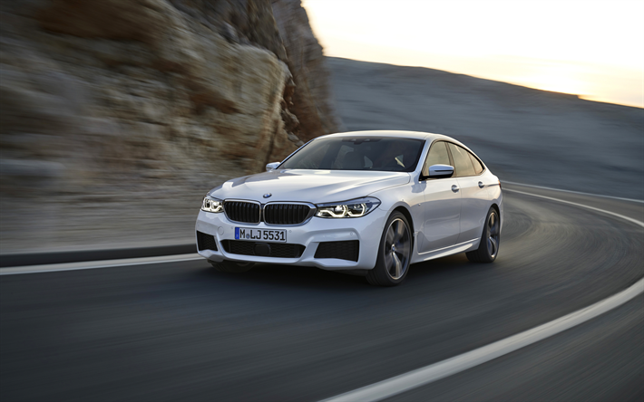
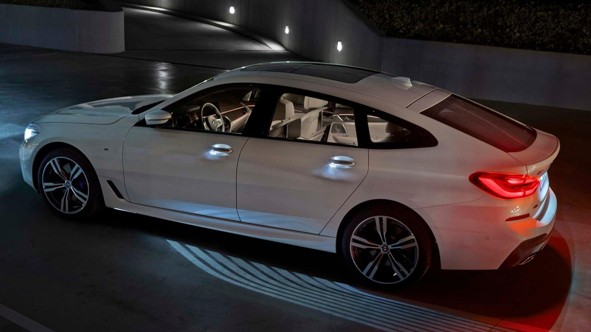
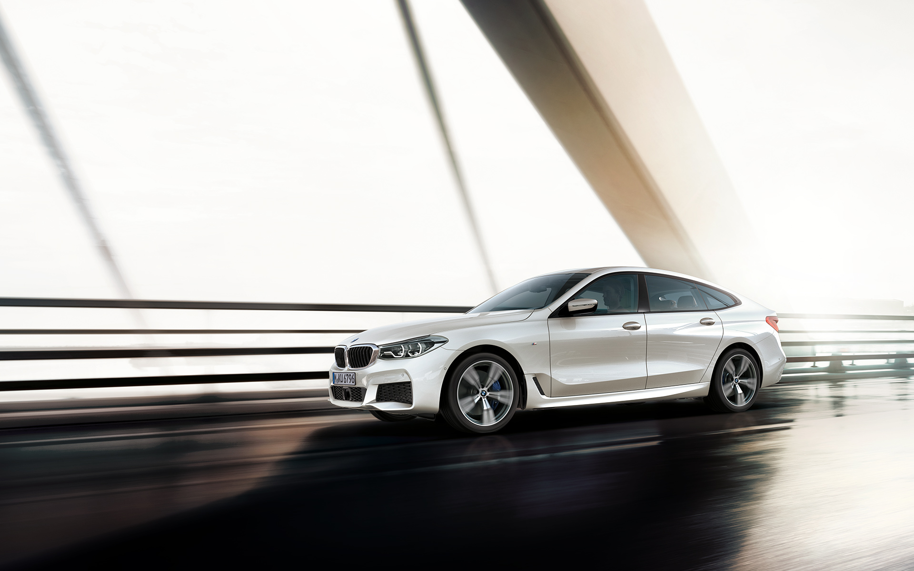

BMW 630i
The BMW 6 Series Gran Turismo is aimed at discerning customers who value individuality, aesthetics and exceptional ride comfort.
REVIEWOne of the ultimate grand-tourers, the BMW 6-Series stands ready to eat up miles, buyers' budgets, and premium unleaded.
The 2018 BMW 6-Series is the German automaker's luxury cruiser; it's more at home whittling away miles on an open stretch of freeway than on a race track and it's available as either a seductive two-door convertible with a power-folding fabric roof, a shapely four-door called the Gran Coupe, and a wagon-esque Gran Turismo that's a bit of an outlier in the range—but more on that soon.
For 2018, the 6 lineup is largely carried over, except for the deletion of the slow-selling two-door coupe. Other variants remain available with both 6- and 8-cylinder power and a choice of rear- or all-wheel drive. But the Gran Coupe and the 6-Series convertible march into 2018 with the same wide range of available powertrains and few other changes.

Subtle but appreciable, the 6-Series looks best as the Gran Coupe.
A tale of three cars, the 6-Series lineup can be had as a tall-riding four door, a convertible, or even a low-roof four-door. They're confident and luxurious on all levels, if a little subtle for some tastes.6-Series has tremendous presence even without any of the styling packs BMW will gladly charge buyers more to order. Along its sides, its flared fenders offer up a low beltline look that's exacerbated by a a roofline that's snug regardless of body.Inside, things are business-like and stark, but still rich and rewarding from every angle. It's very Teutonic inside the 6, but a new high-gloss piano black trim last year livens things up a bit. But fear not: buyers can spend hours pouring over the numerous interior design packages available for an extra cost.

All 6s scoot, but only the 2018 BMW 650i truly excels.
Our favorite is the V-8; it's not as frugal as the 6-cylinder, but it fits this vehicle's mission in life so well. And if you're looking to spend the better part of $100,000 on a luxury vehicle, the extra $10,000 for the 650i over the 640i seems like money well spent.The 640i includes a turbocharged 3.0-liter inline-6 rated at 315 hp and 330 lb-ft. It's hardly a base powertrain, even it's shared with nearly every BMW under the sun. A slick-shifting 8-speed automatic is the only gearbox on offer, but buyers do have the choice between rear- and all-wheel drive.
The inline-6 makes most of its torque low in the rev range (at about 1,700 rpm), which makes it immensely usable around town. But, compared to the 650i, it runs out of steam when passing on the highway when it reveals its mass and relatively weak 315 hp. Opt for the 650i and you'll net a twin-turbo 4.4-liter V-8 with 446 hp and 480 lb-ft of torque that slice a second off of the 640i's 0-60 sprint. But it's not just about drag racing, of course. The V-8 is far stronger from any speed and is among our favorite engines ever made.

You're treated to first-class details everywhere you look, as long as you're up front.
Predictably, the rear seat in two-doors is tight, but what might surprise first time drivers and passengers is just how much they need to duck their heads to slide aboard. The BMW 6-Series' roofline is dramatic, which also means that it's quite low. The same holds true for the Gran Coupe; it mirrors the two-doors up front.There's not an excess of space, but average size adults sitting in the mandatory outboard positions have decent leg, hip and shoulder room—but again not a lot of head space. Then again, most buyers should know what they're getting into with these cars; after all, the 6-Series is rarely the only car in an owner's household. There's probably something far more practical available when such needs arise and perhaps we should be happy that there's more day-to-day usefulness for passengers and their gear here than in a Porsche 911.

Lots of safety tech is optional on the 6-Series, but it's not going to drive itself.
While there's plenty of safety tech standard on the 6-Series—and a pretty comprehensive options set—it has not yet been tested by federal or independent agencies.All 6s feature federally mandated features like a full complement of airbags, anti-lock brakes, and traction and stability control systems plus a backup camera that's especially high-resolution. On the options list are features becoming increasingly standard on rivals—forward collision warnings with city speed automatic emergency braking, blind spot monitors, a birds-eye camera system, and lane departure warnings. There's also a night vision camera setup that can detect pedestrians and an active steering system that will keep the 6-Series within its lane.
All that tech is a big step toward self-driving cars, but the 6-Series isn't quite on par with some rivals in terms of the way it can kind of motor along without driver intervention. But maybe that's a good thing.
You're missing little with a 6-Series, but a high-spec model is well into six figures.
The 630i includes 18-inch alloy wheels, LED headlights, front seats that are 10-way power adjustable and wrapped in leather, wood trim, a proximity key, a wi-fi hotspot, a rearview camera, navigation, and a 10.2-inch infotainment system operated by the brand's iDrive control knob.That iDrive system is a far cry from what BMW debuted nearly two decades ago (has it really been that long?), but it's still hugely menu-intensive and occasionally frustrating to use. But that's to be expected given its rich feature set; there's enough here to fill a massive manual that owners really should commit a few evenings to reading while out in the garage with their cars.
Drivers who want a little more performance from their 6-Series will be tempted by the M Sport package with its 19-inch wheels and high performance tires, LED fog lights, Alcantara headliner, and higher top speed.

Considering its heft, the BMW 630i is rather thrifty.
Rear-wheel drive 630i two-door convertibles and four-door Gran Coupes score 20 mpg city, 29 highway, 23 combined, per the EPA test. Opting for all-wheel drive drops those scores across the board by 1 mpg.The larger, turbocharged 4.4-liter V-8 rates at 16/24/19 mpg in all-wheel drive configuration, according to the EPA. The much newer Gran Turismo is rated at 20/28/23 mpg.In mixed driving, we've seen roughly 22 mpg, which isn't that far off of the EPA figure. More city driving might have helped boost that figure, however, since all models have a stop/start system that cuts out the engine when the 6-Series is at a complete stop.